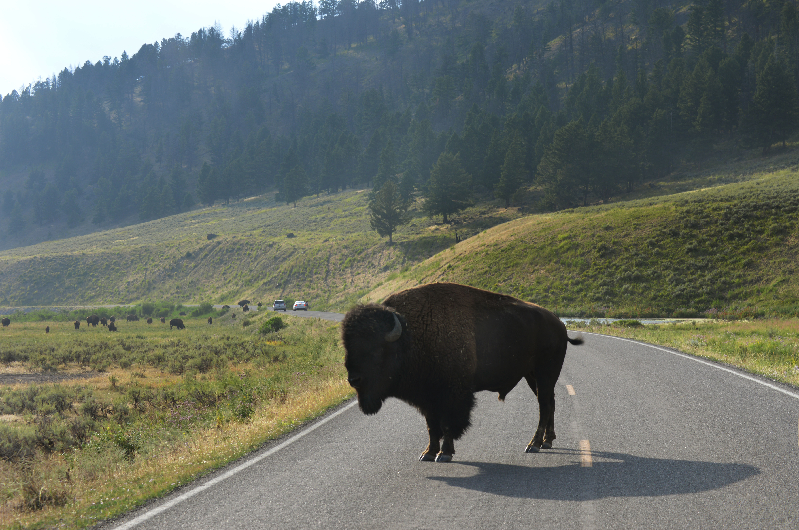
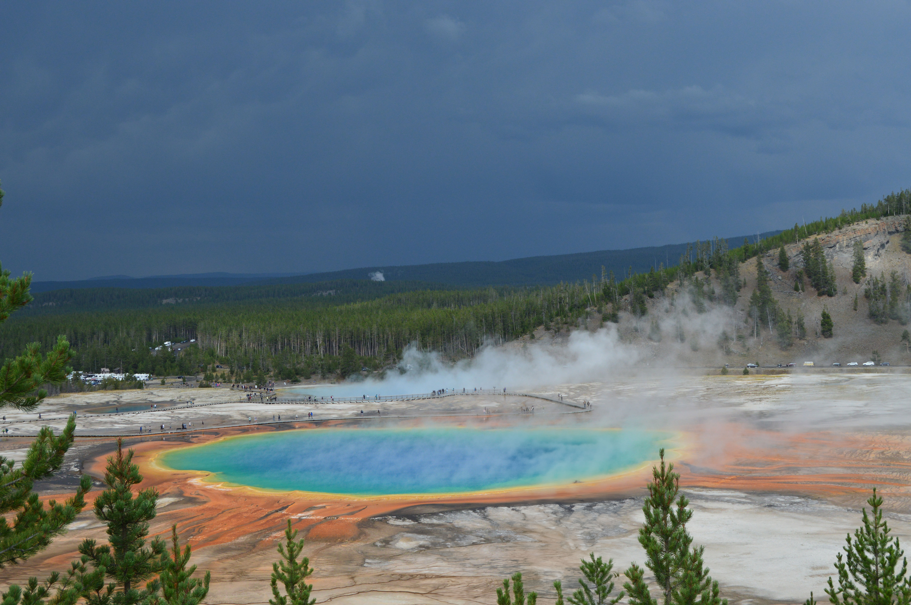

Lamar Valley, nestled in the heart of Yellowstone National Park, is a breathtaking expanse renowned for its pristine wilderness and abundant wildlife. This picturesque valley, shaped by the meandering Lamar River, offers visitors a remarkable opportunity to witness the park's diverse ecosystem. Often referred to as the "Serengeti of North America," Lamar Valley is a prime location for spotting iconic Yellowstone wildlife, including bison, elk, wolves, and grizzly bears. The expansive meadows and panoramic vistas make it a haven for nature enthusiasts and wildlife photographers seeking an immersive experience in one of America's most captivating landscapes.

Lamar Valley

Grand Prismatic Spring
The Grand Prismatic Spring, located in the Midway Geyser Basin of Yellowstone National Park, stands as a vibrant kaleidoscope of colors, captivating visitors with its surreal beauty. Boasting the title of the largest hot spring in the United States, Grand Prismatic mesmerizes with its brilliant hues ranging from deep blues to fiery reds, created by thermophiles—heat-loving microorganisms. The vivid colors are most intense at the center, where the water is hottest. Surrounding the spring, the landscape is adorned with a striking contrast of microbial mats and steam rising from the turquoise water. Grand Prismatic Spring is not only a geological wonder but also a testament to the unique and dynamic forces at play in Yellowstone's hydrothermal features, making it a must-see destination for those exploring the park's natural wonders.

Wildlife
Yellowstone National Park is a haven for diverse and thriving wildlife, showcasing an extraordinary array of species in their natural habitats. The park is home to iconic megafauna like bison, elk, and mule deer, which roam freely across its vast landscapes. Yellowstone's wolf population, successfully reintroduced in the 1990s, has flourished, contributing to the park's balanced ecosystem. Grizzly bears, black bears, and elusive mountain lions inhabit the park's dense forests and rugged terrain. Birdwatchers delight in observing various avian species, including bald eagles, ospreys, and a variety of waterfowl. The Yellowstone River and its tributaries provide a habitat for native fish species such as cutthroat trout. Overall, Yellowstone's diverse ecosystems support a rich tapestry of wildlife, making it a premier destination for nature enthusiasts and conservationists alike.